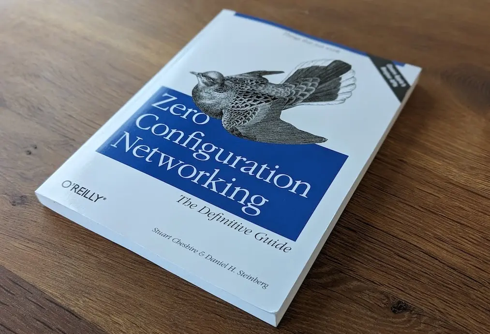
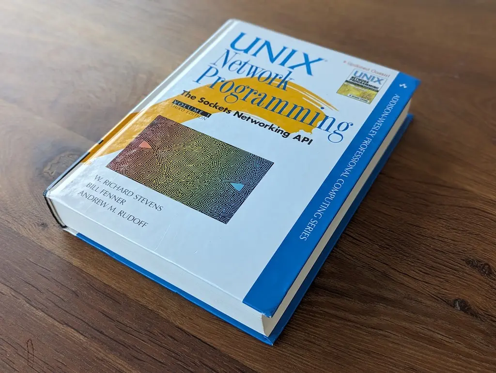

I recently had to ramp up on the topic of mDNS, starting from knowing next to nothing about it. It was not hard to find the motivation to learn about a technology which makes my life easier. From discovering AppleTV, Chromecast, AirPlay, and wireless printers, mDNS it a good thing.
However, I had trouble finding answers to some of my questions. There is definitely learning material out there but it is sprinkled all over the net. So I built myself a "mDNS starter pack".
Stuart Cheshire, an mDNS pioneer, gave a talk named "Zero Configuration with Bonjour" (Apple's implementation of mDNS) in 2005. Even though it is twenty years old, it is still relevant...and preferably available on youtube.
Zero Configuration Networking relies on three pillars which are described in RFCs.
RFC 3927 : Self-assigned IP
RFC 6762 : Multicast DNS protocol
RFC 6763 : DNS-Based Service Discovery
They are well-written and as easy to read as an RFC gets. It may also be useful to read the following.
RFC 1035 : TXT records
RFC 2136 : DNS Update
RFC 2782 : SRV records
RFC 4033 : DNS Security Extensions
In the talk, Stuart mentions a book about to be published. It has been made available since and it is a gem. It elaborates extensively upon mDNS specs and discusses design decisions (e.g.: why application protocol names start with a '_').
 Among many good pieces of advice, the volume recommends to play with dns-dn CLI[1].
$ dns-sd -E Looking for recommended registration domains: DATE: ---Mon 07 Aug 2023--- ...STARTING... Recommended Registration domain Added local
$ dns-sd -B _services._dns-sd._udp local. Browsing for _services._dns-sd._udp.local. DATE: ---Sun 30 Jul 2023--- ...STARTING... A/R Flags if Domain Service Type Instance Name Add 3 15 . _udp.local. _gasetup Add 3 15 . _tcp.local. _hap Add 3 15 . _tcp.local. _airplay Add 3 15 . _tcp.local. _pdl-datastream Add 3 15 . _tcp.local. _printer Add 3 15 . _tcp.local. _ipp Add 3 15 . _tcp.local. _http Add 3 15 . _tcp.local. _googlecast Add 2 15 . _tcp.local. _googlezone
$ dns-sd -B _http._tcp local. Browsing for _http._tcp.local. DATE: ---Sun 30 Jul 2023--- ...STARTING... A/R Flags if Domain Service Type Instance Name Add 2 15 local. _http._tcp. Brother HL-L3230CDW series
$ dns-sd -L "Brother HL-L3230CDW series" _http._tcp. Lookup Brother HL-L3230CDW series._http._tcp..local DATE: ---Sun 30 Jul 2023--- ...STARTING... Brother\032HL-L3230CDW\032series._http._tcp.local. --> BRW106FD95E9F90.local.:80
$ dns-sd -Gv4v6 BRW106FD95E9F90.local DATE: ---Sun 30 Jul 2023--- ...STARTING... A/R Flags IF Hostname Address TTL Add 3 15 BRW106FD95E9F90.local. 192.168.86.37 120 Add 2 15 BRW106FD95E9F90.local. fe80::126f:d9ff:fe5e:9f90 120
$ dns-sd -R Example _http._tcp local 80
$ dns-sd -P Google _http._tcp local 80 google.com google.com
Running wireshark while experimenting to see mDNS/DNS packets helps bringing extra clarity.
Something that is not well explained is why the two dominant mDNS solutions use a daemon (Bonjour has mdnsd and Avahi has avahi-daemon) while some other frameworks, like openscreen, do not.
┌──────────────────────────┐ ┌──────────────────────┐ ┌──────────────────────────┐ │ Machine A │ │ Printer │ │ Machine B │ │ │ │ ┌────────────┐ │ │ │ │ ┌──────┐ ┌────────┐ │ │ │ proc │ │ │ ┌────────┐ ┌──────┐ │ │ │ │ │ │ │ │ └─────┬──────┘ │ │ │ │ │ │ │ │ │ proc ├────► mdnsd ├──┼─┐ │ │ │ ┌─┼─┤ avahi ◄─────┤ proc │ │ │ │ │ │ │ │ │ └──────────┼───────────┘ │ │ │ │ │ │ │ │ └──────┘ └────────┘ │ │ │ │ │ └────────┘ └──────┘ │ │ │ │ │ │ │ │ │ ┌──────┐ │ │ ┌──────────▼───────────┐ │ │ ┌──────┐ │ │ │ │ │ └─► ◄──┘ │ │ │ │ │ │ proc │ │ │ 224.0.0.251:5353 │ │ │ proc │ │ │ │ ├──┼───► ◄────┼──┤ │ │ │ └──────┘ │ │ ff02::fb]:5353 │ │ └──────┘ │ │ │ │ │ │ │ └──────────────────────────┘ └──────────────────────┘ └──────────────────────────┘
Embedded systems will tend to statically link a full mDNS stack (like openscreen) but going through a daemon has significant advantages.
By far the most useful aspect of a daemon is automatic removal of a service when a process terminates. How does a daemon achieve such a feat?
Bonjour uses a Unix Domain Socket (UDS) (/var/run/mDNSResponder[3][4]) when they are available. A process registering a service opens a connection to the UDS. When the process finishes, mdnsd sees the connection ending and unpublish the service automagically.
How Bonjour Works
─────────────────
┌────────────────────┐
│ Client Application │
┌────────────────┐ ├────────────────────┤
│ uds_daemon.c │◄─────Unix Domain Socket ────►│ libmdns │
├────────────────┤ └────────────────────┘
│ mDNSCore │
├────────────────┤
│ mDNSPosix.c │
└────────────────┘
On Windows, there are no UDS so instead Bonjour creates a TCP server socket on 127.0.0.1:5354[5]. If you are interested in learning about Bonjour further, the generous ReadMe.txt[6][7] in mdnsResponder source code are goldmines. Apple's Bonjour documentation is also pretty good.
Avahi uses a different technique to keep track of processes' life cycle. Instead of UDS, it relies on Linux's dBus.
How Avahi Works
───────────────
┌────────────────────────────────────────────────────────────────────────────┐
│ Linux dBUS │
└───────────┬────────────────────────────▲─────────────────────────▲─────────┘
│ │ │
│ │ │
┌───────────▼───────────┐ ┌──────────┴─────────┐ ┌──────────┴─────────┐
│ daemon/main.c │ │ Avahi dBUS API │ │ Avahi dBUS API │
├───────────────────────┤ ├────────────────────┤ ├────────────────────┤
│ Avahi │ │ Client Application │ │ Client Application │
└───────────────────────┘ └────────────────────┘ └────────────────────┘
When a process connects to a dBUS, the bus assigns to the connection a unique connection name. When the process dies, the same dBUS is notified[8]. This process life-cycle monitoring allows Avahi to unpublish a mDNS service if the process dies without doing it due diligence.
If you are as OCD as I am, you will want to inspect the message transiting on dBUS. It is possible and the instructions are here and here.
Most developers are familiar with the TCP model involving socket/bind/listen/accept on the server side, socket/connect on the client side, and write/read in between.
mDNS uses UDP. Even though it is simpler, the protocol cannot be simplified to sending/receiving datagrams. There are unconnected UDP sockets using sendto/revcfrom, connected sockets using recv/send (or even read/write), and in the case of multicast, groups to join.
The bible to get up to speed is Unix Network Programming by W. Richard Stevens.
Knowing that a daemon may be running should influence how you design your mDNS program. The daemon may already be bound to port 5353 and prevent your program from using it. Or your program may have to be friendly with an up and running deamon. When using UDP multicast, there are ways to share a port via SO_REUSEPORT/SO_REUSEADDR socket option. When properly setup, all processes see all received/emitted packets for a shared multicast UDP port.
The subtle peculiarities of SO_REUSE* options are well explained on stackoverflow by Mecki[9]. The SO_REUSEPORT option is further explained on lwn.net[10]. The full picture and reference (p. 731 of TCPv2) comes, once again, from the bible Unix Network Programming.
Theory is nice but the only way to be sure is to verify. Here is a cross-platform mDNS workbench wb.c to test ways to share the mDNS port depending if SO_REUSEADDR and/or SO_REUSEPORT options are set.
| System | mDNS Daemon | SO_REUSEADDR / SO_REUSEPORT |
|---|---|---|
| MacOS X | Bonjour | SO_REUSEPORT |
| Linux | Avahi[11] | SO_REUSEADDR and/or SO_REUSEPORT |
| Windows[12] | UWP | SO_REUSEADDR |
| Windows with Bonjour[13] | Bonjour[14] | SO_REUSEADDR |
| ^ | [ 1] | On Linux, avahi CLI gets you the same result. |
| ^ | [ 2] | List of service types |
| ^ | [ 3] | mdnsd uses /dev/socket/mdnsd on Android. |
| ^ | [ 4] | mDNSResponder IPC Protocol |
| ^ | [ 5] | mDNSResponder USE_TCP_LOOPBACK |
| ^ | [ 6] | ReadMe About mDNSPosix |
| ^ | [ 7] | ReadMe About mDNSWindows |
| ^ | [ 8] | D-Bus Tutorial |
| ^ | [ 9] | How do SO_REUSEADDR and SO_REUSEPORT differ? |
| ^ | [10] | The SO_REUSEPORT socket option |
| ^ | [11] | Avahi has been commited to SO_REUSEPORT for at least 18 years! |
| ^ | [12] | On Windows SO_REUSEPORT is not supported (compilation error). |
| ^ | [13] | On Windows SO_REUSEPORT is not supported (compilation error). |
| ^ | [14] | Packaged with iTunes, Bonjour is often found on Windows. |